周五下班，直接往东开
行程还是那么特种兵。周五下班，我俩从肯塔基直接开车出发。四个多小时之后天彻底黑了，就在西弗吉尼亚随便找了个旅馆住下。


周六爬起来继续开，又是六七个小时。穿过山，穿过一个个小镇，总算到了特拉华最大的城市——威尔明顿。

美国“第一州”，也是第二小的州
特拉华这地方挺有意思。它因为最早批准美国宪法，被叫作“第一州”；面积却是全美第二小，感觉油门稍微踩猛点，就能直接开出州界。


威尔明顿不大，水边很舒服。城市天际线隔着河铺开，比赛的起终点就在 Tubman-Garrett Riverfront Park 一带。
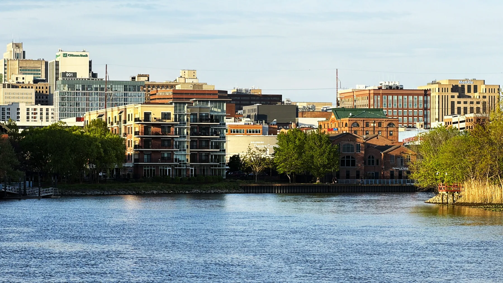
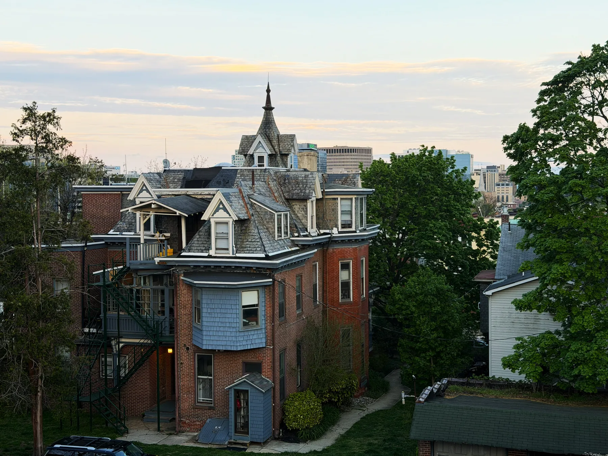
晚上去整了个韩国部队火锅。跑前嘛，必须把碳水拉满。锅里咕嘟咕嘟冒着泡，面、年糕、午餐肉全下去，第二天的二十六点二英里先有了底。

早上七点，河畔准时开跑
周天早上七点，比赛在市中心河畔准时开跑。天阴阴的，大概十度。对跑马来说，这温度简直太舒服了。


城北：坡
Brandywine Park、Rockford Park、林荫道与社区道路。风景漂亮，但大大小小的起伏一直磨大腿。
城南：直
Jack Markell Trail 一路伸向 New Castle。路彻底平了，代价是十几英里树林原路折返。
前半程：风景很好，坡也真多
前半程主要在城北的 Brandywine Park 和 Rockford Park 一带绕。林荫道很漂亮，桥、河、老社区一段接一段；但地图上那绕来绕去的线，几乎全是大大小小的坡。


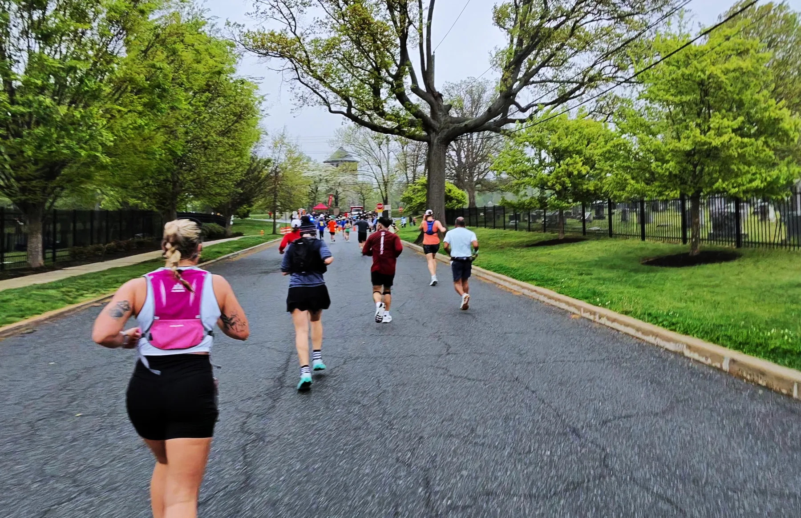
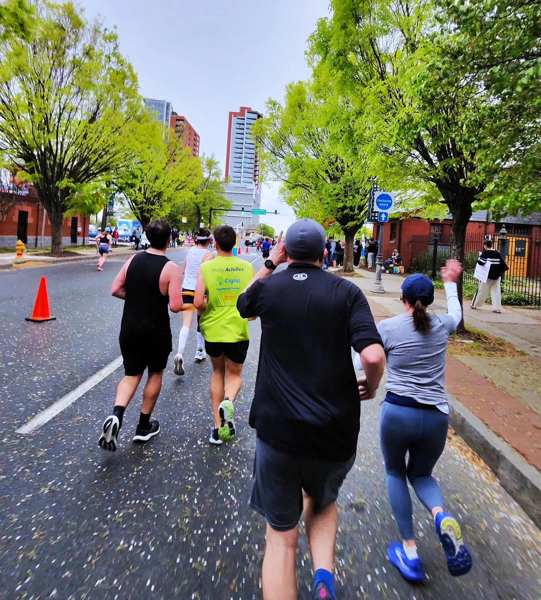
这种坡不一定长，但密。刚觉得下坡能松两步，转个弯又开始往上拱。前十三英里跑完，大腿已经很诚实了。
后半程：路平了，脑子开始熬
熬过半程，路线直接一路往南，扎进野生动物保护区，接着上了通向 New Castle 的 Jack Markell Trail。
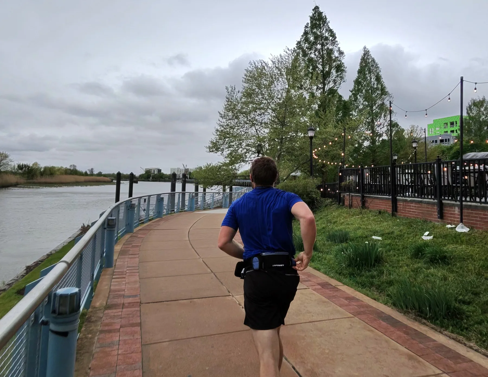


这半程几乎全在大片树林里跑。身体上比前半程友好，心理上却更熬人：十几英里没有太多景色变化，跑到折返点，再原路返回。

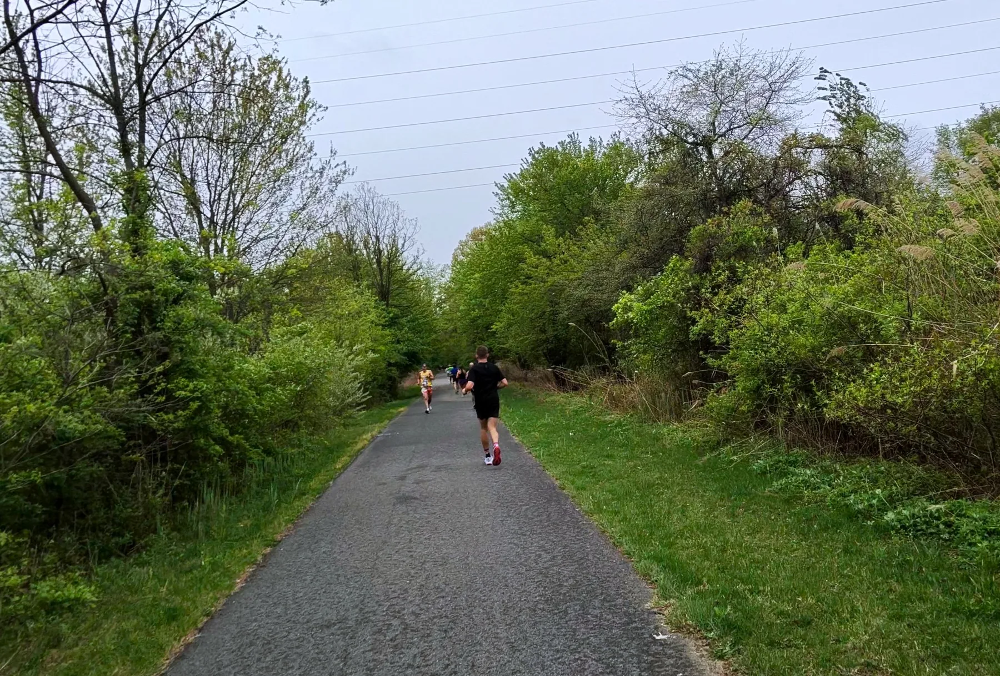
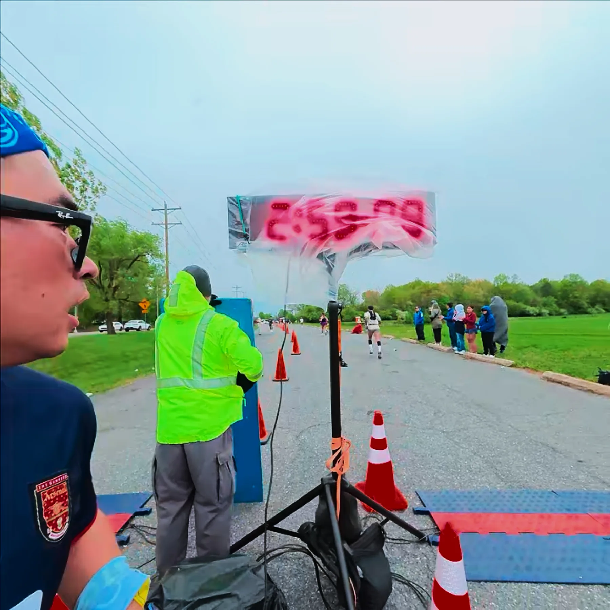
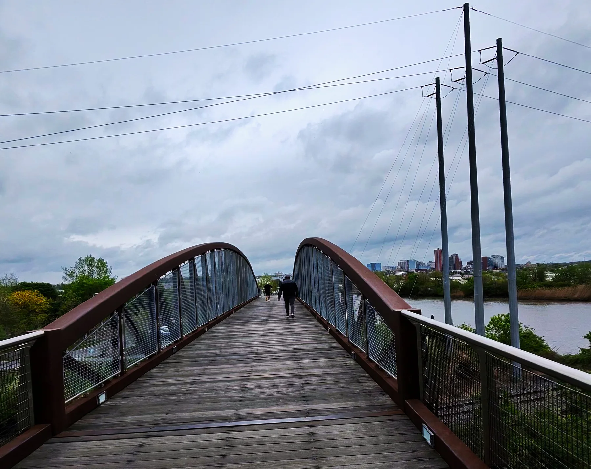
前半程磨腿，后半程磨心。特拉华虽小，这场马拉松一点都不短。
冲线、战斗澡、热包子
回到威尔明顿，终点拱门重新出现在眼前。最后几十米穿过人群，抬手冲线——第 30 个州，拿下。

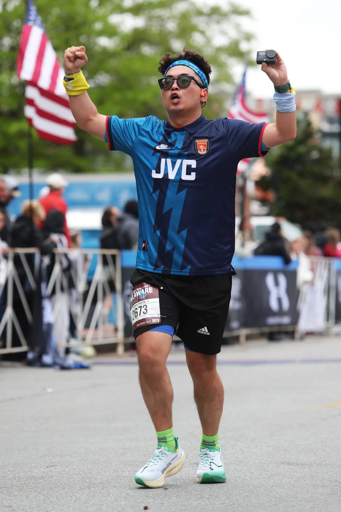

跑完一分钟都没耽搁，赶紧去附近的 Planet Fitness 冲了个战斗澡。出来的时候，嗣琪刚好顺路买到南翔的包子。
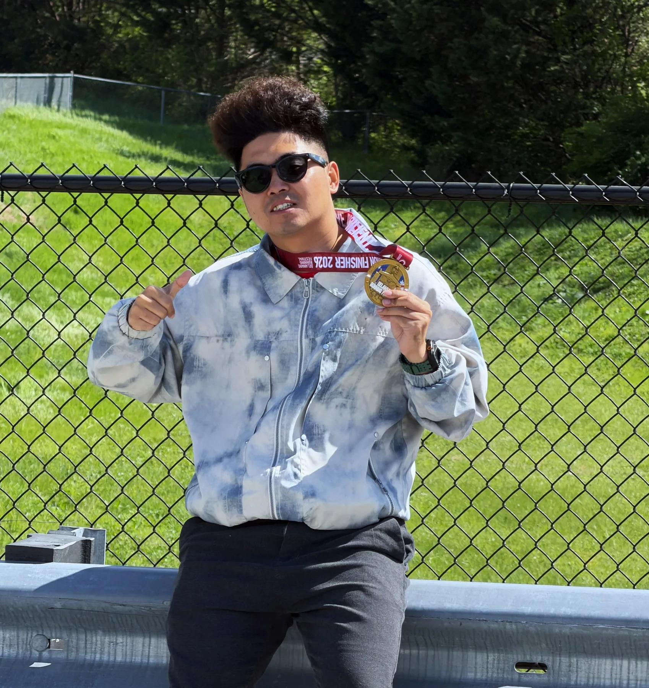

吃饱继续往回赶。又是马里兰，又是西弗吉尼亚，又是大山里的高速。晚上开到查尔斯顿住下，第二天一早继续回肯塔基，无缝衔接回公司上班。
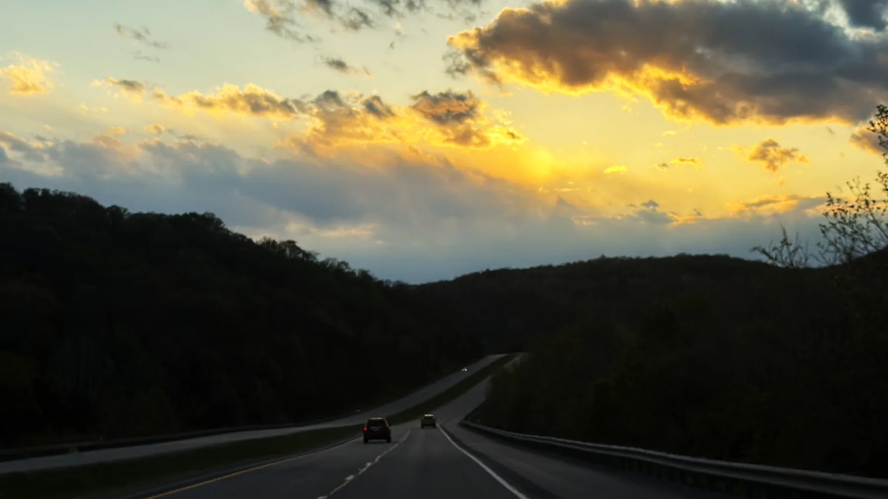
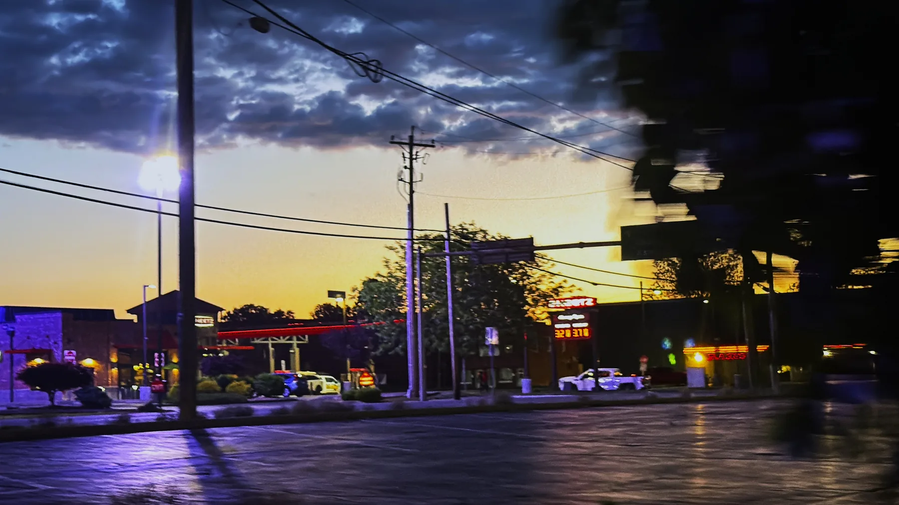
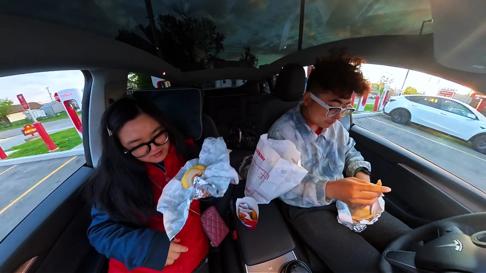
RUN50 FINISH LINE
第 30 个州，顺利拿下。
收拾收拾，接着搬砖。下一站，明尼苏达。
继续看第 31 州 →